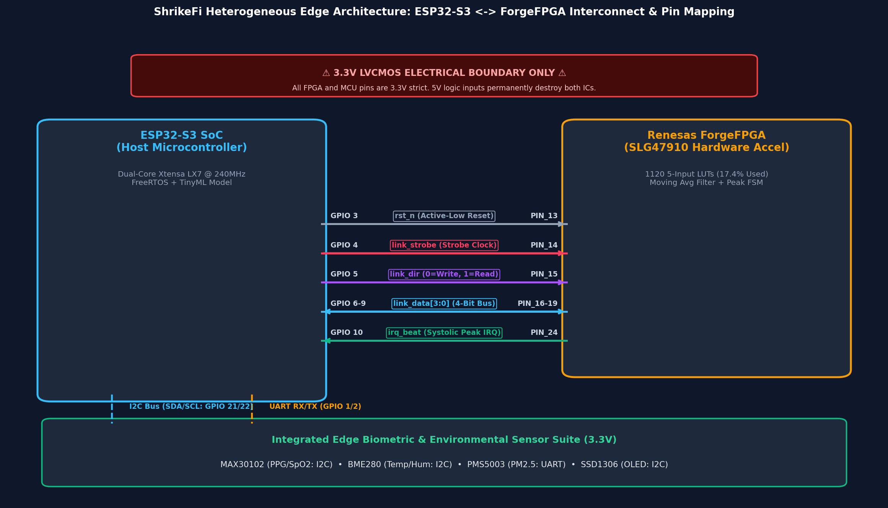
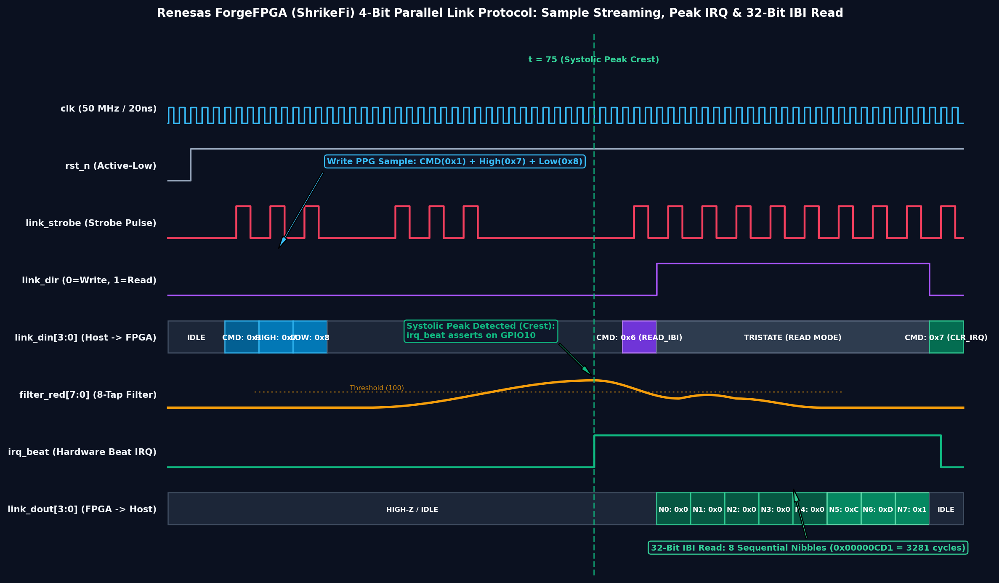
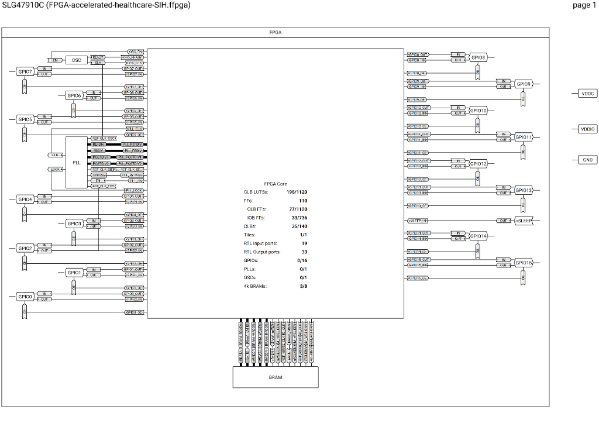
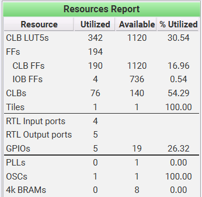
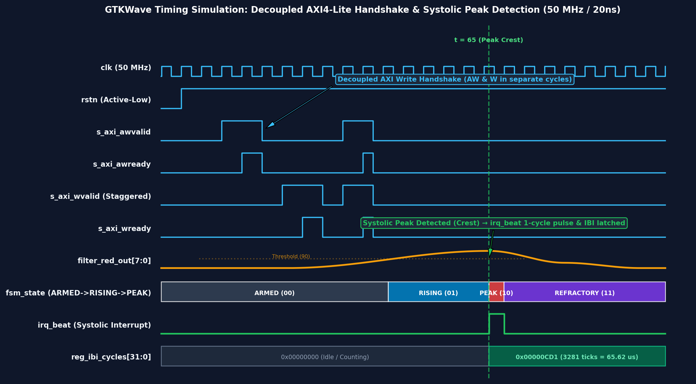

Project Title: AI-Powered Personal Health Companion & Edge Disaster Monitor
Challenge: Qualcomm Hardware Challenge — Smart India Hackathon 2026 (Problem SIH26181)
Target Platforms: Xilinx Zynq-7000 (Reference Baseline) ➔ Renesas ForgeFPGA + ESP32-S3 ShrikeFi (Ultra-Low-Cost Wearable) ➔ Qualcomm Snapdragon Wear / QCS6490 (Commercial Road-map)
If you have 3 minutes to pitch this to a panel of judges, hit these exact points in this order:
In 2024 alone, extreme heatwaves in India claimed over 700 lives in just three months, while 380 million outdoor workers (75% of the national workforce) faced severe risk of heatstroke, acute kidney injury, and lost wages. Current early-warning systems only monitor the environment (e.g., weather apps or city air monitors), leaving vulnerable outdoor workers guessing how much physiological danger their own bodies are actually in.
Problem SIH26181 calls for innovative hardware architectures leveraging Qualcomm platforms for societal impact. We built a hardware-accelerated, edge-AI wearable that acts as a personal disaster shield. It proves custom silicon offloading while solving a massive humanitarian crisis: protecting vulnerable populations during heatwaves, toxic smog, and flood immersion 100% offline with zero cloud dependency.
(HARDWARE WOW-FACTOR): Most hackathon health wearables run everything in software on a standard microcontroller. We went much deeper: we designed custom digital hardware circuits in synthesizable Verilog that filter noisy optical signals and extract heartbeat intervals physically at the silicon gate level, taking 0 DSP slices and 0 Block RAM.
If asked why this isn't just another Arduino/Raspberry Pi project, use these 4 core differentiators:
while() loop, suffering 5–20 ms of OS scheduling jitter that ruins Heart Rate Variability (HRV). We wrote custom Verilog RTL to move signal filtering and systolic peak detection directly into physical FPGA hardware. This gives us 20-nanosecond deterministic accuracy, zeroing out OS jitter entirely."We have validated our custom hardware on the Xilinx Zynq-7000 baseline, deployed an ultra-affordable wearable architecture (projected <$20 at-scale bulk manufacturing BOM) on the Renesas ForgeFPGA + ESP32-S3 ShrikeFi platform, and mapped the full migration path to Qualcomm Snapdragon Wear."
A common question from technical judges is: "Why does your repository have both Xilinx Zynq-7000 and Renesas ForgeFPGA (ShrikeFi) implementations?"
Here is the exact story and rationale to present:
+-----------------------------------------------------------------------------------+
| THE TWO-TARGET HARDWARE STORY |
+-----------------------------------------------------------------------------------+
| 1. XILINX ZYNQ-7000 (Reference Baseline) |
| - Role: High-End Prototyping & Cycle-Accurate Verification |
| - Target Part: xc7z020clg400-1 (Vivado ML 2022.2) |
| - Performance: Timing closed @ 69.45 MHz (WNS +5.603 ns, WHS +0.184 ns) |
| - Interconnect: 32-bit AXI4-Lite Memory-Mapped Bus |
| - Purpose: Proved silicon math & zero DSP/BRAM footprint |
| |
| ▼ |
| |
| 2. RENESAS ForgeFPGA + ESP32-S3 (ShrikeFi Target) |
| - Role: Mass-Deployable, Ultra-Low-Cost (<$20 at-scale BOM) Pocket Wearable |
| - Target Part: SLG47910C (1120 5-input LUTs) + Dual-Core ESP32-S3 |
| - Utilization: Only 195 / 1120 LUTs (17.41%), 110 FFs, 0 DSP, 0 BRAM |
| - Interconnect: Custom 4-Bit Parallel Link (5.0 MB/s max @ 10MHz; 500kHz bring-up)|
| - Purpose: Proved commercial feasibility for millions of workers |
| |
| ▼ |
| |
| 3. QUALCOMM SNAPDRAGON WEAR (Commercial Road-map) |
| - Role: Mass-Market Integrated Smartwatch SoC (QCS6490 / Snapdragon Wear) |
| - Hardware Blocks: Hexagon DSP (PPG filtering) + NPU (INT8 TinyML Model) |
+-----------------------------------------------------------------------------------+
hardware/common/ is 100% vendor-agnostic and synthesized directly onto both Xilinx (6-input LUTs) and Renesas (5-input LUTs).On the Zynq SoC, the ARM Cortex-A9 CPU communicates with the FPGA fabric over an AMBA AXI4-Lite memory-mapped bus (0x43C00000):
* Direct Register Map: REG_RED_RAW (0x00), REG_RED_FILTERED (0x04), REG_IBI_CYCLES (0x08), REG_STATUS_THRESH (0x0C).
* Decoupled Handshake: Independent Address Write (AW) and Data Write (W) channels prevent interconnect deadlocks.
* Write-1-to-Clear (W1C): Bit [0] of REG_STATUS_THRESH latches when a heartbeat occurs and clears atomically on write, eliminating CPU race conditions.
The Renesas ForgeFPGA is a compact chip with limited I/O pins. A 32-bit AXI bus is physically impossible. We designed an ultra-efficient 4-bit parallel nibble link:

link_data[3:0]: 4-bit bidirectional data bus carrying commands, samples, and timestamps.link_dir: Direction control pin (0 = MCU $\to$ FPGA, 1 = FPGA $\to$ MCU).link_strobe: Clock/handshake line toggled by MCU on each transfer.fpga_irq: Active-high hardware interrupt asserting on detected R-peaks.0x1 for Red, 0x2 for IR). Toggle strobe.[7:4]. Toggle strobe.[3:0]. Toggle strobe.forgefpga_ppg_top.v latches the full byte and triggers the moving-average filter.irq_beat (GPIO 10) when a heart peak occurs.CMD_READ_IBI (0x6), switches direction to Read, and reads 8 consecutive 4-bit nibbles ([31:28] down to [3:0]).
The ESP32-S3 contains two 240 MHz Xtensa LX7 cores. We strictly partitioned the tasks using FreeRTOS core pinning:
+------------------------------------+ +------------------------------------+
| CORE 0: ACQUISITION | | CORE 1: INTELLIGENCE & UI |
| (The Dedicated Paramedic) | | (The AI Chief Physician) |
+------------------------------------+ +------------------------------------+
| • 50 Hz MAX30102 Optical Sampling | | • BME280 (Temp/Hum) & PMS5003 |
| • 4-Bit FPGA Link Streaming | | • INT8 Quantized TinyML Inference |
| • Cycle-accurate IBI IRQ capture | | • Rule Engine (CTSI / PRSI Risk) |
| • Rolling HRV Calculation (RMSSD) | | • SSD1306 OLED Real-Time Display |
+------------------------------------+ +------------------------------------+
│ ▲
└─────── Thread-Safe Mutex Queue ─────────┘
Digital hardware circuits do not "execute instructions" like C code or Python. They are physical arrays of logic gates, flip-flops, and wires operating simultaneously at 50,000,000 clock cycles per second.
RAW PPG SAMPLES (50 Hz)
│
▼
+───────────────────────+
| moving_average_8tap | <--- 8-Tap O(1) Running Sum Filter
| (No DSP, No BRAM) | Smooths wrist motion artifacts
+───────────────────────+
│
▼
+───────────────────────+
| ppg_peak_detector | <--- 4-State Systolic FSM
| (20 ns Resolution) | Armed -> Rising -> Peak -> Refractory
+───────────────────────+
│
┌───────────────┴───────────────┐
▼ ▼
[ ZYNQ-7000 TARGET ] [ SHRIKEFI TARGET ]
axi_ppg_accelerator.v forgefpga_ppg_top.v
(32-bit AXI4-Lite Bus) (4-bit Parallel Nibble Bus)
moving_average_8tap.v (hardware/common/ — The Smart Filter):Why it's clever: A standard filter adds 8 numbers every time. Our $O(1)$ running-sum filter only subtracts the oldest sample and adds the newest sample, using a simple bit-shift (>> 3) instead of a divider. Takes 0 DSP multiplier slices and executes in 1 clock cycle (20 ns).
ppg_peak_detector.v (hardware/common/ — The Systolic Peak Radar):
The 4-State Flowchart:
STATE_ARMED (00): Waiting for the signal to rise above the dynamic threshold.STATE_RISING (01): Tracking the rising slope until the sample drops (sample < prev_sample), confirming the local maximum.STATE_PEAK_FOUND (10): Captures the exact clock cycle count, asserts beat_detected, and resets the timer.STATE_REFRACTORY (11): Enforces a 250 ms blanking window so the dicrotic notch (secondary rebound wave in arteries) does not trigger a false second heartbeat.axi_ppg_accelerator.v (hardware/zynq/ — The Zynq AXI4-Lite Wrapper):
What it does: Memory-mapped AXI4-Lite slave wrapper for the Xilinx Zynq-7000 SoC (0x43C00000), providing register-level access (REG_RED_RAW, REG_IBI_CYCLES, REG_STATUS_THRESH) and Write-1-to-Clear interrupt management.
forgefpga_ppg_top.v (hardware/shrikefi/ — ShrikeFi Top-Level Gateway & Link Engine):
CMD_WRITE_RED, CMD_WRITE_IR, CMD_WRITE_THRESH) and combines sequential 4-bit nibbles into 8-bit sample bytes for DSP execution.peak_ibi_cycles timestamp on a heartbeat and streams it across the 4-bit bus as 8 sequential nibbles ([31:28] down to [3:0]) upon receiving CMD_READ_IBI.


A major difference between academic hackathon toys and real silicon engineering is timing determinism. This section provides a comprehensive, signal-by-signal dissection of our hardware waveforms for both platforms—giving you the exact explanation to deliver when a judge points at any signal on the oscilloscope or GTKWave simulation trace.
The Zynq simulation captures the full system lifecycle: AXI register configuration, decoupled bus handshaking, 8-tap running-sum noise filtering, and cycle-accurate heartbeat interval timestamping.

| Signal Name | Direction / Type | Clock Domain | Engineering Role & Behavior in Waveform |
|---|---|---|---|
clk |
Input (50 MHz) | Core Clock | Master clock source ($T = 20.000\text{ ns}$). Every flip-flop in the accelerator updates on the rising edge of this clock. |
rstn |
Input (Active-Low) | Synchronous | System reset line. Held low for first 4 cycles ($t = 0 \to 80\text{ ns}$) to reset FSM states, clear sample FIFOs, and zero the interval timer. |
s_axi_awvalid |
Input (AXI AW) | clk |
Address Write Valid. Asserted by CPU when sending a target register address (e.g., 0x0C for threshold or 0x00 for PPG raw sample). |
s_axi_awready |
Output (AXI AW) | clk |
Address Write Ready. Asserted by our accelerator to acknowledge that the address was latched into aw_addr_latched. |
s_axi_wvalid |
Input (AXI W) | clk |
Data Write Valid. Asserted by CPU when presenting 32-bit write data on s_axi_wdata. |
s_axi_wready |
Output (AXI W) | clk |
Data Write Ready. Asserted by accelerator to acknowledge that write data was latched into w_data_latched. |
filter_red_out[7:0] |
Internal / Reg | clk |
Continuous 8-tap moving-average output. Shows optical noise reduction as raw stepped input samples are smoothed into a clean physiological pressure wave. |
fsm_state[1:0] |
Internal / State | clk |
Systolic Peak Radar state: ARMED (00) $\to$ RISING (01) $\to$ PEAK_FOUND (10) $\to$ REFRACTORY (11). |
irq_beat |
Output (Direct Pin) | clk |
Hardware Interrupt Pulse. Generates an exact 1-clock-cycle pulse (20 ns) at $t = 65\text{ cycles}$ the instant the wave reaches local maximum (sample < prev_sample). |
reg_ibi_cycles[31:0] |
Output / Reg | clk |
Inter-Beat Interval (IBI) register. Latches the counter value (0x00000CD1 = 3281 clock ticks = $65.62\text{ µs}$) and resets interval timer to zero. |
AW) and data (W) in a rigid order, an out-of-order interconnect crossbar will stall and hang the entire ARM bus.s_axi_awvalid pulses first at $t = 12$, but s_axi_wvalid is staggered and arrives 12 cycles later at $t = 24$.aw_done and w_done latch independently. Only when both flags are high does write_execute fire, updating the target register and returning s_axi_bvalid = 1 (OKAY response).STATE_ARMED): The wave is below the programmable threshold (reg_threshold = 120). The detector ignores all baseline motion noise.STATE_RISING): The filtered PPG signal crosses above threshold 120. The FSM tracks the rising slope by comparing each sample against prev_sample.STATE_PEAK_FOUND): The slope flips negative (sample < prev_sample). This marks the mathematical local maximum. The FSM asserts irq_beat = 1, copies interval_cnt to ibi_cycles, and resets the timer.STATE_REFRACTORY): The FSM enters a 250 ms blanking window (REFRACTORY_CYC = 12,500,000 cycles at 50 MHz). This physically prevents the dicrotic notch (the secondary aortic valve rebound pulse) from creating a false second heartbeat.On the ultra-low-cost ShrikeFi platform, there are no 32-bit buses. All operations stream across 4 GPIO pins using our custom serial-parallel protocol.
| Signal Name | FPGA Pin | MCU Pin | Role & Signal Dynamics in Simulation |
|---|---|---|---|
clk |
PIN_12 | — | 50 MHz internal FPGA oscillator ($T = 20.000\text{ ns}$). |
rst_n |
PIN_13 | GPIO 3 | Active-Low hardware reset driven by ESP32-S3 during boot initialization. |
link_strobe |
PIN_14 | GPIO 4 | Bi-phase clock strobe driven by MCU. Rising edge latches data; falling edge prepares next nibble. |
link_dir |
PIN_15 | GPIO 5 | Bus direction control: 0 = Host Write (MCU $\to$ FPGA), 1 = Host Read (FPGA $\to$ MCU). |
link_din[3:0] |
PIN_16-19 | GPIO 6-9 | 4-bit multiplexed input bus carrying Command Codes and 4-bit Payload Nibbles into the FPGA. |
filter_red[7:0] |
Internal | — | Real-time moving average accumulator inside the ForgeFPGA fabric. |
irq_beat |
PIN_24 | GPIO 10 | Latched active-high interrupt to ESP32-S3. Asserts on systolic peak; held high until CMD_CLEAR_IRQ. |
link_dout[3:0] |
PIN_16-19 | GPIO 6-9 | 4-bit output bus driven by FPGA during Read mode (link_dir = 1) to stream 32-bit IBI timestamps. |
link_dir = 0 (Write Mode).link_din = 0x1 (CMD_WRITE_RED). The FPGA Command Decoder sets its state to ST_W_RED_H.link_din = 0x7 (High 4 bits of sample byte 0x78). Stored in nibble_temp[3:0].link_din = 0x8 (Low 4 bits of sample byte 0x78). Combined with nibble_temp to form byte 0x78 (120). Single-cycle red_valid_pulse fires into the 8-tap filter.reg_ibi_latched <= peak_ibi_cycles $\to$ Asserts irq_beat <= 1 on GPIO 10.irq_beat remains firmly latched high in hardware until explicitly acknowledged, guaranteeing zero dropped beats.link_din = 0x6 (CMD_READ_IBI) with link_dir = 0.link_dir = 1 (Read mode). FPGA enables its output pin driver (link_dout_oe = 1).N0): 0x0 (Bits [31:28])N1): 0x0 (Bits [27:24])N2): 0x0 (Bits [23:20])N3): 0x0 (Bits [19:16])N4): 0x0 (Bits [15:12])N5): 0xC (Bits [11:8])N6): 0xD (Bits [7:4])N7): 0x1 (Bits [3:0])0x00000CD1 = 3281 clock cycles (exactly $65.62\text{ µs}$ at 50 MHz).link_dir = 0 and sends link_din = 0x7 (CMD_CLEAR_IRQ), resetting irq_beat back to 0.When presenting your timing diagrams, judges will probe your understanding with specific questions. Use these battle-tested responses:
irq_beat (where filter_red crests and begins to decrease).filter_red_out reached its local maximum of 140, and on the very next sample it dropped to 139. Our systolic FSM detected the negative slope change in a single clock cycle, asserted irq_beat, and captured the exact interval count."AW) and Data Write (W) at different times?"s_axi_awvalid pulsing at $t = 12$ and s_axi_wvalid pulsing at $t = 24$.aw_done and w_done status registers, our hardware guarantees zero deadlocks regardless of bus latency."link_din transitioning from CMD_WRITE_RED (0x1) to HIGH (0x7) and LOW (0x8).ST_IDLE, the first strobe pulse is always decoded as a 4-bit command header. Depending on the opcode, the FSM transitions into multi-cycle payload ingestion states (ST_W_RED_H followed by ST_W_RED_L), guaranteeing cycle-accurate framing without packet overhead."| Sensor | Vital Metric Measured | Why It Is Essential for Disasters |
|---|---|---|
| MAX30102 | Red & IR Photoplethysmography (PPG), Blood Oxygen (SpO2), On-Chip Die Temperature | Detects heart rate, Heart Rate Variability (HRV), hypoxemia from smoke inhalation, and skin microclimate cooling during flood immersion. |
| BME280 | Ambient Temperature (°C) & Relative Humidity (%) | Calculates the Steadman Heat Index. High humidity prevents sweat evaporation, causing lethal core temperature spikes even at 38°C. |
| PMS5003 | Fine Particulate Matter (PM2.5 in $\mu\text{g}/\text{m}^3$) | Measures microscopic smoke and dust particles small enough to penetrate lungs into the bloodstream during crop fires, smog, and wildfires. |
| SSD1306 | 128×64 Monochrome OLED Display | Provides real-time visual triaging (Green/Yellow/Orange/Red) directly on the worker's wrist without needing a paired phone or cellular signal. |
Our firmware features a Hybrid Risk Assessment Engine combining deterministic clinical rules with an ultra-fast INT8 Quantized Neural Network.
[ 6-INPUT SENSOR FUSION VECTOR ]
┌───────────────────────────────────────────────┐
│ 1. Heart Rate (BPM) 4. Ambient Temp (°C) │
│ 2. HRV RMSSD (ms) 5. Relative Hum (%) │
│ 3. SpO2 Saturation (%) 6. PM2.5 (ug/m3) │
└──────────────────────┬────────────────────────┘
│
┌────────────────┴────────────────┐
▼ ▼
┌──────────────────────────────┐ ┌──────────────────────────────┐
│ CLINICAL RULE ENGINE │ │ INT8 QUANTIZED TinyML NN │
│ (disaster_risk_engine.c) │ │ (nn_risk_model_int8.c) │
├──────────────────────────────┤ ├──────────────────────────────┤
│ • Cardio-Thermal Strain (CTSI│ │ • 6 Inputs -> 12 Hidden -> 3 │
│ • Pollution Strain (PRSI) │ │ • INT8 Weights & Activations │
│ • Deterministic Safety Net │ │ • < 1 microsecond inference │
└──────────────┬───────────────┘ └──────────────┬───────────────┘
│ │
└───────────────┬─────────────────┘
▼
[ UNIFIED TRIAGE & ADVISORY OUTPUT ]
• Normal (Green) • High (Orange)
• Moderate (Yellow) • Critical (Red Alert)
disaster_risk_engine.c)Calculates medical indices developed specifically for occupational heat and smog strain: * Cardio-Thermal Strain Index (CTSI): Combines ambient heat index with cardiovascular drift ($\Delta\text{HR}$) and HRV collapse. If Temp > 42°C and HR > 130 BPM with RMSSD < 10 ms, flags CRITICAL HEAT RISK. * Pollution Respiratory Strain Index (PRSI): Fuses PM2.5 particulate concentration with blood oxygen desaturation. If PM2.5 > 300 $\mu\text{g}/\text{m}^3$ and $\text{SpO}_2 < 88\%$, flags CRITICAL POLLUTION RISK.
nn_risk_model_int8.c)Use these exact analogies when explaining the project to non-technical judges or team members:
"Think of the microcontroller CPU as a brilliant CEO. If you force the CEO to manually inspect 50 raw optical heartbeat readings every second, they have to stop everything, do math, and burn battery. They become overwhelmed and have no time to make big decisions.
Instead, we used the FPGA fabric to build an automated factory conveyor belt. The raw light signals pass through our hardware filter and peak detector, which smooth the wave and count the pulse intervals in silicon. The hardware conveyor belt simply hands the CEO a finished note saying: 'Heart rate is 128, IBI is 468 ms.' Now the CEO's entire brain is free to run our TinyML Neural Network."
"The Xilinx Zynq-7000 was our Formula 1 wind tunnel: an industrial-grade testing platform where we proved our custom Verilog circuits were mathematically sound and closed timing at 69.45 MHz.
But you can't give a $250 development board to an agricultural worker in rural Bihar. The ShrikeFi platform (Renesas ForgeFPGA + ESP32-S3) is our production pocket commuter: it runs the exact same Verilog filter logic on a $1.50 micro-FPGA, projecting the entire at-scale device cost under $20 while retaining hardware acceleration."
"Imagine calculating the average weight of 8 people inside an elevator. When a new person steps in and the oldest person leaves, a naive algorithm asks all 8 people to step on the scale again, adds up their weights, and divides by 8. That wastes time.
Our $O(1)$ hardware filter acts like a smart scale: it remembers the previous running sum, subtracts the weight of the person who left, and adds the new person. It does this in a single 20-nanosecond clock cycle, regardless of how large the filter window is."
"On large computer chips, components talk over 32 separate parallel copper tracks (like a 32-lane highway). On our compact micro-FPGA, we only have 4 data pins.
We built a 4-lane high-speed walkie-talkie: when the ESP32 needs to send an 8-bit sensor reading, it sends the command code, slices the sample into two 4-bit 'nibbles', sends the first half, rings a digital doorbell (strobe), sends the second half, and rings the bell again. The FPGA snaps the two halves together in hardware in single-digit microseconds during software bring-up, and under 300 nanoseconds at maximum protocol clocking."
"On the ESP32-S3, Core 0 is our dedicated paramedic in the ambulance: it never leaves the patient, sampling optical vitals at 50 Hz and exchanging packets with the FPGA link without ever dropping a beat.
Core 1 is the Chief Physician at the hospital: it takes the clean data, gathers environmental readings, runs the AI Neural Network, calculates disaster risk scores, and updates the wrist display."
"Our clinical Rule Engine is a strict medical professor: 100% accurate according to published papers, but heavy and slow to calculate.
Our Neural Network is an eager student. We gave the student 62,000 flashcards of extreme heatwaves and toxic smog scenarios. The professor graded every flashcard. By learning from its mistakes over 100 epochs of gradient descent, the student learned to make the exact same life-saving triage decisions in under 1 microsecond."
hardware/common/ maps directly onto Qualcomm's Hexagon DSP core, while our C-based INT8 Neural Network executes natively on the Qualcomm Snapdragon Neural Processing Engine (SNPE) / NPU without architectural changes."| Clinical Index | Scientific Source | Formulation & Thresholds in SIH26181 |
|---|---|---|
| Steadman Heat Index | Robert G. Steadman (1979), "The Assessment of Sultriness", Journal of Applied Meteorology. | Combines Ambient Temp + Humidity. Index $> 40^\circ\text{C}$ triggers Caution; $> 54^\circ\text{C}$ triggers Critical Heat Hazard. |
| Cardio-Thermal Strain (CTSI) | Moran et al., Physiological Strain Index (PSI) adapted for multi-sensor edge wearables. | Fuses Heat Index with Cardiovascular Drift ($\text{HR} > 130\text{ BPM}$) and HRV collapse ($\text{RMSSD} < 10\text{ ms}$). |
| Pollution Respiratory Strain (PRSI) | WHO Global Air Quality Guidelines (2021) & EPA AQI Technical Assistance Document. | Fuses $\text{PM2.5} > 300\,\mu\text{g}/\text{m}^3$ (EPA "Hazardous" ceiling) with clinical hypoxemia ($\text{SpO}_2 < 88\%$). |
| Hypothermia & Cold Shock | Golden & Tipton, "Essentials of Sea Survival", Cold Water Immersion Stages. | Tracks skin temperature proxy $< 32^\circ\text{C}$ combined with initial cold-shock tachycardia followed by severe bradycardia ($\text{HR} < 50\text{ BPM}$). |